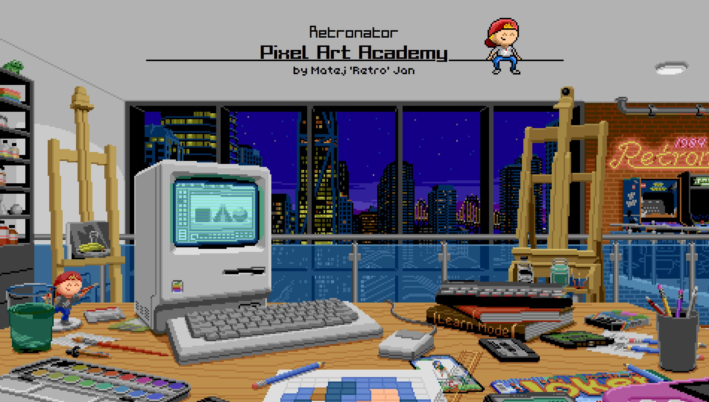

Pixel art is not just any art form it's really a production art form, or something only made to be produced in a certain style. Pixel art has been around since the 80s, but art studios or game studios haven't been producing their ideas and assests with pixel art, they used traditional drawing on pen and paper. Pixel Art as stated is a style and just like any style anyone can learn it. Pixel art has it's strengths and weaknesses.
Pixel art is easy to pick up from a traditional pen and paper artist. Well what if you have never drwan or really honed skills and drew for fun that's ok too. Pixel art is there for beginners as a art style that really hones in with keeping shape and form even throughout it's easy to make perfect circles, squares, and just by counting everything can look even or in form. Pixel art also has the nostalgia and timeless going for it as a style. You don't need high tech gear or rendering to complete it and that also plays into it's unique blocky apperance. Pixel art is also lightweight, by that in file sizes and working in possibly a small canvas boosts vreativity to think outside the box and really get the most out of what you can in a small area.
Pixel art is great for beginners but that also plays into it's downside, with being in a limited space or limited to a grid it can be tricky to create highly detailed art or truly imagine it. Pixel art is also naturally blocky so it can be hard to convey shape intention unless you up the resolution which then it becomes trickier to just not draw free hand rather than counting blocks and ratios. With pixel art being so retro it can't fit into every idea because again it's easy to start but very hard to master, you need to know color theory to shade with dithering or clustering animate with pixel-perfect accuracy, and mistakes are very noticable. Pixel art is also not as main stream as other art styles so people aren't interested naturally that your game may look good from a pixel art style perspective but it has it's limits and it is very time consuming compared to traditional to reach high detail to try to match the detail you can get out of traditional.
Nonetheless pixel art can be a nice way to get your creative ideas on paper and learning it may be a struggle so I recommend to check out Pixel Art Academy where all rights and effort goes to Matej Retro' Jan. He made pixel art as a game simulator based in a class room of traditional painting with retro or old school looks, if you don't want to buy the game the website also has a free study guide to check out as well. Actually the pixel art behind this text I made.
 Visit Pixel Art Academy